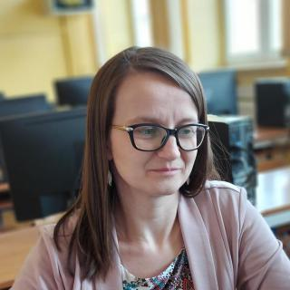

Konkurs CanSat to wyzwanie organizowane przez Europejską Agencję Kosmiczną dla młodzieży. Polega na zbudowaniu minisatelity wielkości puszki, który wykona zadania badawcze.
Każda drużyna musi zrealizować dwie misje: misję podstawową, realizowaną przez wszystkich i misję dodatkową, wybieraną osobno przez każdy zespół. Misja podstawowa polega na zbadaniu temperatury i ciśnienia, na różnych wysokościach oraz na przesłaniu tych danych na ziemię.
Naszym celem, który obraliśmy sobie jako naszą misję dodatkową jest przedstawienie działania technologii INS. Jest to system, który umożliwia poznanie swoich współrzędnych przy ograniczonym korzystaniu z GPS.
Przed wylotem rakiety (która zabierze wszystkie CanSaty na wysokość około 2km) nasz minisatelita sprawdzi swoją pozycję przy pomocy GPS. Póżniej, już przy pomocy IMU — specjalnego zestawu czujników, będziemy sami obliczać swoją pozycję. Będzie się to jednak wiązało z pewnym niewielkim błędem, który będzie wynikał z ograniczeń IMU, którego będziemy mogli użyć, więc co za tym idzie, zsynchronizujemy swoją pozycję z GPS w połowie lotu. Wszelkie dane zebrane podczas misji będą bądź to wysłane do stacji naziemnej, bądź to zapisane na karcie SD naszego CanSata.
Jesteśmy zespołem z I Liceum Ogólnokształcącego w Brzozowie. W skład grupy wchodzi pięcioro uczniów klasy trzeciej i jeden uczeń z klasy drugiej, a naszym opiekunem jest pani Joanna Chęć.
Jestem nauczycielką matematyki i informatyki w I Liceum Ogólnokształcącym w Brzozowie. Interesuje mnie zdrowy styl życia, szczególnie pod względem zdrowego odżywiania. Z tego powodu w wolnym czasie zajmuję się prowadzeniem swojego ogródka z warzywami. Moją rolą w projekcie jest doradzanie członkom zespołu Volatus w ich działaniach konkursowych. Sprawuję pozycję swojego rodzaju administratora i inspektora, który czuwa nad pracą swoich podopiecznych oraz stanowi łączność między nimi, a organizatorami konkursu.

Chodzę do klasy 3A i mam 16 lat. Rozszerzam matematykę, informatykę i angielski na poziomie dwujęzycznym. Interesuję się programowaniem niskopoziomowym, reverse engineeringiem, Linuxem i brydżem. W wolnych chwilach uczę się arabskiego. Moją rolą jest pisanie oprogramowania, dzięki któremu nasz satelita zadziała oraz zajmowaniem się komunikacją radiową i stacją naziemną. Wziąłem udział w tym konkursie, ponieważ interesuje się komunikacją radiową oraz zawsze chciałem napisać kod na tego typu urządzenie.

Mam 17 lat i chodzę do klasy 3A. Rozszerzam matematykę, informatykę oraz angielski na poziomie dwujęzycznym. Interesuję się sportami walki oraz montażem filmowym. Moją główną rolą w projekcie jest jego dokumentacja w postaci pisania raportów (PDR, CDR, FDR) oraz zbierania funduszy na budowę CanSata. Biorę udział w tym konkursie, bo chcę, aby był on dla mnie okazją dla rozwoju osobistego oraz swojego rodzaju wyzwaniem, które wyciągnie mnie spoza własnej strefy komfortu i wzbogaci o nowe doświadczenia oraz wspólne wspomnienia z innymi członkami drużyny.
Mam 17 lat, chodzę do klasy 3A i rozszerzam matematykę, informatykę i angielski na poziomie dwujęzycznym. Interesuję się rysowaniem, projektowaniem, drukiem 3D, robotyką i montowaniem filmów, a w wolnym czasie uczę się gry na gitarze. Moją główną rolą w projekcie jest prowadzenie social mediów, zbieranie funduszy i tworzenie modelu 3D CanSata na drukarce 3D. Biorę udział w tym konkursie, ponieważ jest to dla mnie idealna okazja, by rozwijać swoją wiedzę w zakresie budowy maszyn i programowania; jest to też dla mnie szansa, by spróbować czegoś nowego, sprawdzic swoje możliwości, a także możliwość poznania nowych ludzi i rozwijanie umiejętności pracy w zespole i kreatywnego myślenia.

Mam 16 lat i uczęszczam do klasy 3A, gdzie rozszerzam matematykę, informatykę oraz angielski na poziomie dwujęzycznym. Interesuję się programowaniem, modelowaniem 3D i geopolityką. Hobbystycznie gram w brydża i uczę się języka greckiego. Moją rolą w tym projekcie jest zarządzanie pracą i szeroko rozumiana grafika komputerowa. Ze względu na charakter projektu daje on duże możliwości samorozwoju, jak i wdrażania zdobytej wiedzy w życie.

Chodzę do klasy 3A i mam 16 lat. Rozszerzam matematykę, informatykę oraz angielski na poziomie dwujęzycznym. Interesuję się programowaniem, pisaniem stron internetowych, matematyką i technologią kosmiczną. W czasie wolnym gram w brydża i uczę się języka łacińskiego. Biorę udział w tym konkursie, ponieważ chcę przetestować swoje siły w zadaniu, które łączy naukę z pasją do technologii i sprawdzić, jak poradzę sobie w obliczu czekających mnie wyzwań.

Mam 16 lat i chodzę do klasy 2A rozszerzając matematykę, fizykę i angielski. Interesuję się astronomią, elektroniką oraz projektowaniem i modelowaniem 3D w programach CAD, CAM i CAE. W tym zespole zajmuję się całym hardware'em i elektroniką. Biorę udział w tym konkursie, ponieważ uwielbiam projekty techniczne takie jak ten, i myślę, że jest to idealna okazja na poszerzenie moich umiejętności.

Skończyliśmy pisać PDR i przedstawiliśmy go naszemu mentorowi — pani Joannie Chęć. Po kilku drobnych poprawkach wysłaliśmy go. Teraz czekamy tylko na wyniki.
 TikTok
TikTok
 Facebook
Facebook